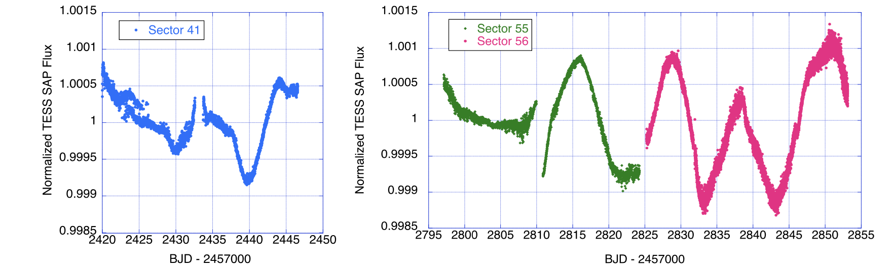
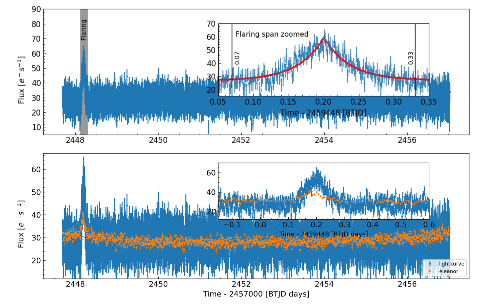
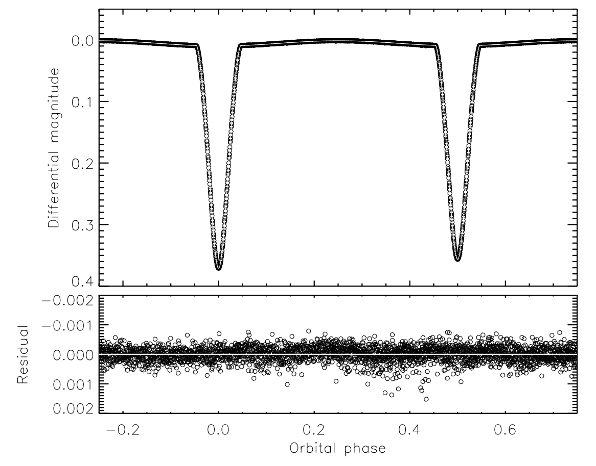

Welcome TESS followers to our latest news bulletin!
This week, we are looking at three recent papers from the archive. Enjoy!
The Abrupt Resumptions of Pulsations in α Cygni (Deneb) (Abt et al. 2023) :
Deneb is an A2 Iae supergiant near the Cepheid strip, with a dominant period of 11.7 days and an apparent magnitude of 1.25. As one of the brightest stars in the night sky it has been extensively studied for more than a century, both spectroscopically and photometrically. During these observations, it has been discovered that after the large-amplitude pulsations damp down, a new set of pulsations start almost immediately, with a typical interval timescale of about 72 days. Abt et al. (2023) present a detailed analysis of the unusual behavior of Deneb utilizing TESS data, archival photometry, and spectroscopy. TESS observed the target in 2-min cadence in Sectors 41, 55, and 56, and the authors observed a prominent increase in the regularity and amplitude of the pulsations in all three sectors. Abt et al. (2023) also confirm that a prominent, nearly-regular 12-day pulsation period is present in the data, and note that the beginning of a new pulsation cycle is clearly detected in Sector 55. Additionally, the authors state that while these 3 sectors are insufficient to verify the unusual ~70-day cycle for the resumption of the pulsations and constrain its starting point, future TESS observations have the potential to do so. Combining the existing data with new observations from Sectors 76, 82, and 83, TESS offers the potential to unravel the mysteries of this most unusual star.
Rapid Optical Flare in the Extreme TeV Blazar 1ES 0229+200 on Intraday Timescale with TESS (Kishore et al. 2024) :
Blazars are a class of active galactic nuclei exhibiting prominent stochastic light curve variability that reach large amplitudes and span short timescales. These can be used to constrain the physical parameters of the system, and provide deeper understanding of the underlying processes and mechanisms. Kishore et al. (2024) present a detailed analysis of 1ES 0229+200 – a high-redshift (z ~ 0.14), extreme TeV, high-frequency peaked BL Lac-type blazar. The target was observed by TESS in Sectors 42, 43, and 44, and the authors used both the 2-min and the 30-min cadence data to study the optical variability on intra-day timescales. The authors detected rapid, yet short-lived, variability in Sector 42 and found no indications of significant variations in the other two sectors. The Sector 42 light curve shows a prominent flaring event lasting for about 6 hours, with a symmetric profile and exhibiting identical e-folding timescales with an average of about 0.88 hours. Combining the latter with the measured redshift, Kishore et al. (2024) were able to place an upper limit on the corresponding physical size of the emission region of about 3.3x10^15 cm. In addition, the authors performed Lomb-Scargle periodogram analysis of the Sector 42 data, and measured a power spectrum density slope of 4.3 for the flaring region (both in the 2-min and in the 30-min cadence data). Away from the flare, the measured slope is ~0.04/1.9 for the 2-min/30-min cadence, respectively. The authors attribute this difference to the different background subtraction between the two cadences. Kishore et al. (2024) note that the in-flare power spectrum density slope is unusually high, and argue that it indicates a sudden change in the electron distribution. Thanks to TESS data, the authors were able to obtain the first evidence for a prominent, rapid, short-lived optical flare in the lightcurve of the TeV blazar 1ES 0229+200.
Rediscussion of eclipsing binaries. Paper XVIII. The F-type system OO Pegasi (Southworth 2024) :
Detached eclipsing binary stars enable direct measurements of stellar masses and radii, which make them critical calibrators for the physical processes underlying the theoretical models for stellar formation and evolution. As such, benchmark systems that provide high-precision measurements are high-priority targets for detailed studies. Southworth (2024) combines TESS data with archival spectroscopic measurements and presents a comprehensive analysis of the eclipsing binary OO Pegasi. The system is relatively bright (V =84 mag) and consists of two late A-type stars (A7V + A8V) on a circular orbit with a period of 2.985 days. TESS observed OO Peg in 10-min cadence in Sector 55 (and will observe again in Sector 82) and clearly detected the primary and secondary eclipses. Southworth (2024) found no evidence for period changes with respect to the known ephemeris, decreased the period uncertainty by a factor of 3, and noted that there is ~1% contamination in the TESS light curve due to resolved nearby sources. The author performed light curve analysis by combining the TESS photometry with radial velocity measurements into the JKTEBOP code. Southworth (2024) found that the primary star is slightly less massive than the secondary (1.69 MSun vs 1.74 MSun), slightly larger, hotter, and more luminous. The author measured corresponding mass uncertainties of 5.2% and 3.3%, respectively, radius uncertainties of about 1.4%, and noted that the measured radii of both stars disagree with previous results. The author also notes that while both stars reside in a parameter space where a large fraction of stars are delta Scuti pulsators, neither exhibits pulsations. Thanks to TESS, Southworth (2024) was able to obtain high-quality photometric parameters for the detached eclipsing binary OO Pegasi.
 Fig. 1: Taken from Abt et al. (2023). 2-min TESS photometry of Deneb from Sectors 41, 55, and 56, highlighting the prominent pulsations as well as the beginning of a new pulsation cycle in Sector 55.
 Fig. 2: Taken from Kishore et al. (2024). TESS photometry of the TeV blazar 1ES 0229+200 exhibiting a prominent flare in Sector 42. Upper panel: 2-min cadence data (blue) along with the best-fit flare model (red). Lower panel: Same as the upper panel but comparing the 2-min cadence data to the 30-min cadence data (yellow symbols).
 Fig. 3: Taken from Southworth et al. (2024). Phase-folded TESS data (filled symbols) of the detached eclipsing binary OO Pegasi, along with the best-fit model (white) and corresponding residuals.